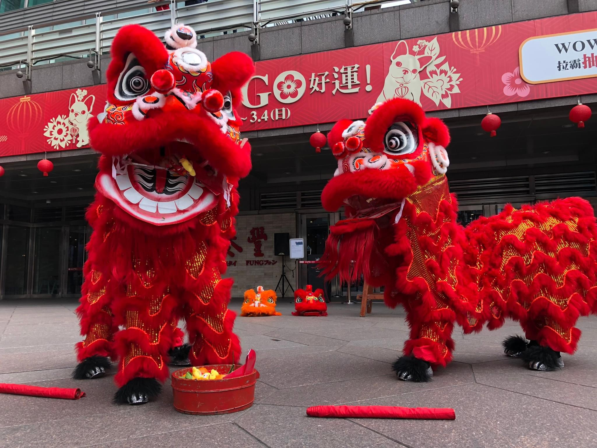
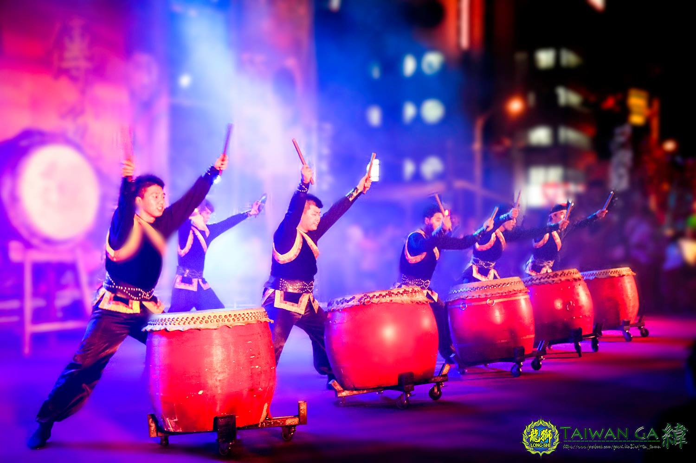
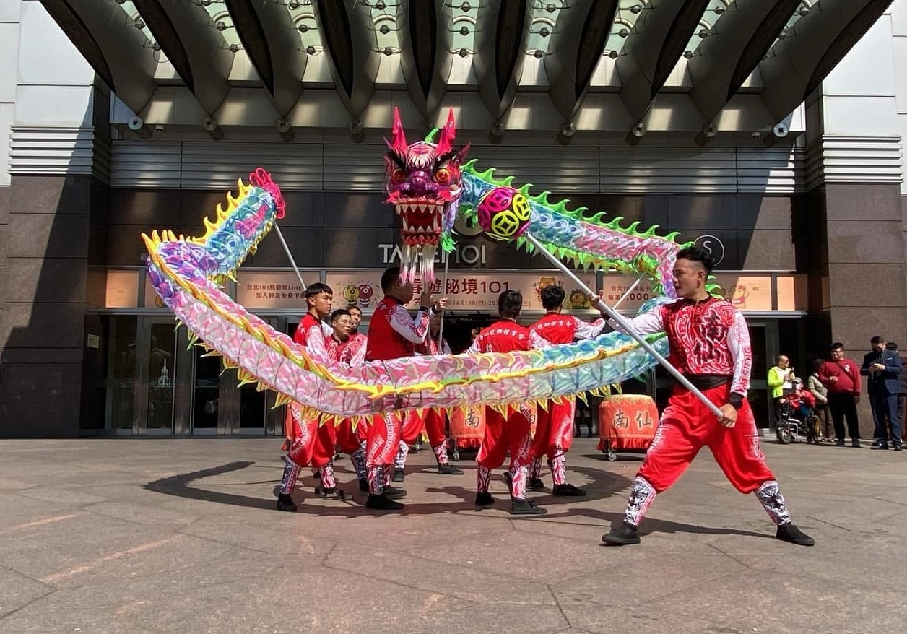
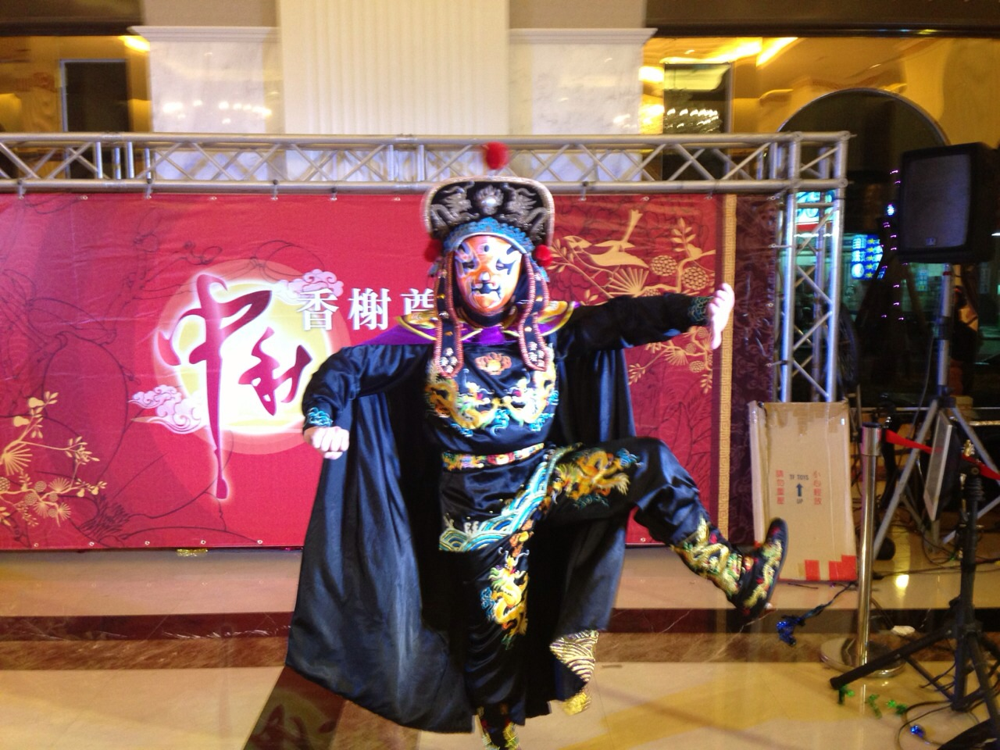
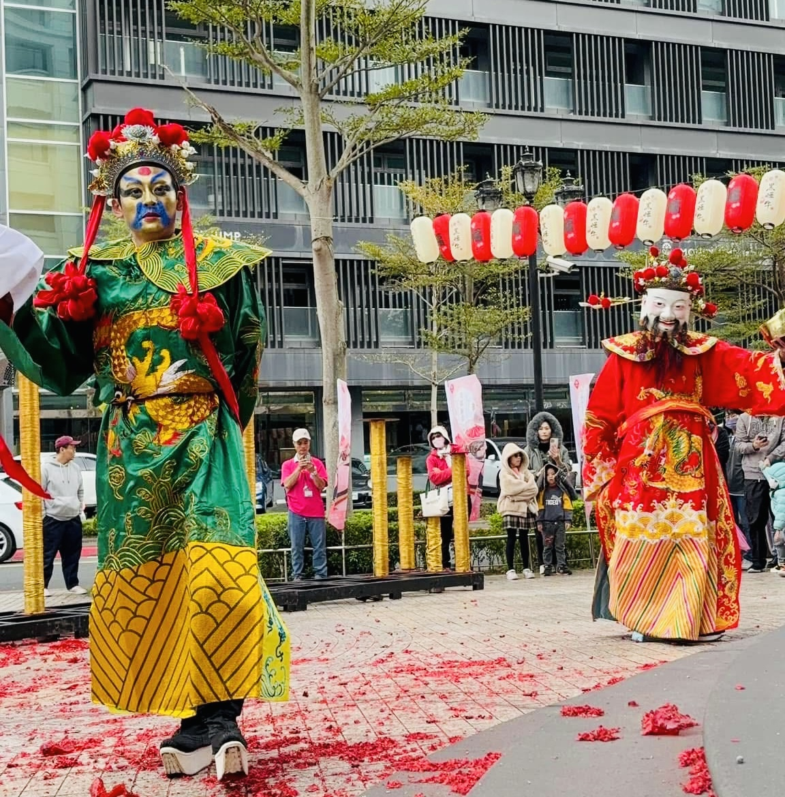
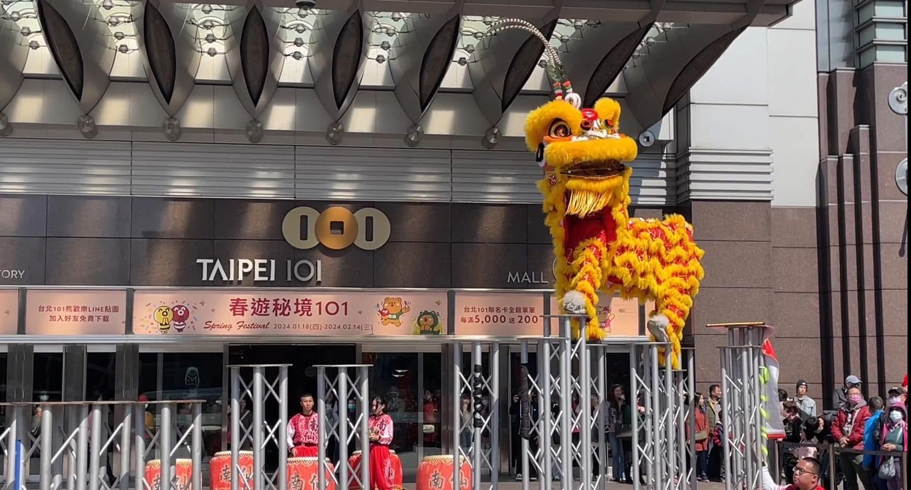

台灣南仙龍獅團
Taiwan Nan Sieng Dragon & Lion Dance Activity Centre
首頁
關於我們
表演項目
祥獅獻瑞
雷鳴戰鼓
祥龍搶珠
電音三太子
文武財神
民俗藝陣
表演項目
祥獅獻瑞
雷鳴戰鼓
祥龍搶珠
電音三太子
文武財神
民俗藝陣
活動案例
開幕開工
春酒尾牙
觀光表演
追思儀式
動土上樑
百貨春節・週年慶
廟會繞境・祝壽典禮
學校社團・企業教學
展演服務
遊行活動
造勢活動
演唱會演出
影像／廣告拍攝
活動案例
開幕開工
春酒尾牙
觀光表演
追思儀式
動土上樑
百貨春節・週年慶
廟會繞境・祝壽典禮
學校社團・企業教學
展演服務
聯絡我們
活動案例
精選台灣南仙在不同情境中的呈現方式






🦁
台灣
關閉